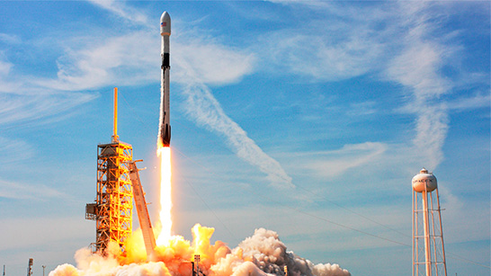
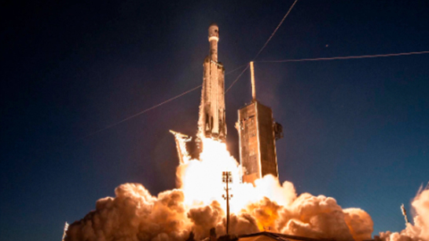
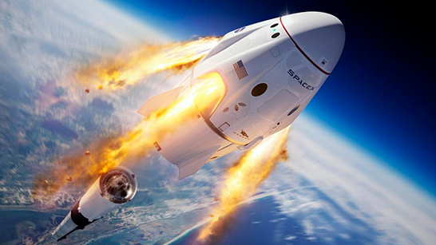
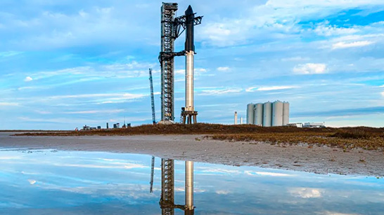

Starlink es la tecnología desarrollada por SpaceX que aporta conexión a internet en casi cualquier lugar del mundo.

Falcon 9 es un cohete reutilizable de dos etapas diseñado y fabricado por SpaceX para el transporte confiable y seguro de personas y cargas útiles a la órbita terrestre y más allá.
Falcon 9 es el primer cohete reutilizable de clase orbital del mundo.
La reutilización permite a SpaceX volver a volar las partes más caras del cohete, lo que a su vez reduce el costo del acceso al espacio.
Falcon Heavy está compuesto por tres núcleos reutilizables de nueve motores Falcon 9 cuyos 27 motores Merlin juntos generan más de 5 millones de libras de empuje en el despegue
Como uno de los cohetes operativos más potentes del mundo, Falcon Heavy puede elevar casi 64 toneladas a la órbita.
La nave espacial Dragon es capaz de transportar hasta 7 pasajeros hacia y desde la órbita terrestre y más allá.
Es la única nave espacial actualmente en vuelo que es capaz de devolver cantidades significativas de carga a la Tierra, y es la primera nave espacial privada que lleva humanos a la estación espacial.
La nave espacial Starship y el cohete Super Heavy de SpaceX, llamados colectivamente Starship, representan un sistema de transporte totalmente reutilizable diseñado para transportar tripulación y carga a la órbita de la Tierra, la Luna, Marte y más allá
Starship es el vehículo de lanzamiento más potente jamás desarrollado en el mundo, capaz de transportar hasta 150 toneladas métricas totalmente reutilizables y 250 toneladas métricas prescindibles.
Starlink es la tecnología desarrollada por SpaceX que aporta conexión a internet en casi cualquier lugar del mundo.